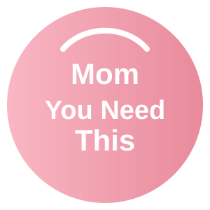

📆 FREE DAYS OF THE WEEK CALENDARThis free printable days week calendar activity is designed for toddlers and preschoolers ages 2-5. The worksheet includes hands-on exercises that build early learning skills through play. Download and print at home with no signup needed — no account required, just print and start learning.
Plan the whole week together with this free printable days of the week calendar. Toddlers and preschoolers can see what's coming, mark special days, and learn the rhythm of a week.
Use this weekly calendar to help your child learn the seven days, look forward to fun plans, and understand routines like school days and weekends.
Download the days of the week calendar printable below and print it at home — no signup needed.
Print the weekly calendar and fill in the week together — draw or stick pictures for school, park days, and weekends. Each morning, find today and talk about what's happening. Use the printable for family planning or preschool calendar time.
A weekly calendar helps children understand routines, sequence, and the idea of past and future. Seeing the week laid out makes time visual and predictable, which little ones love.
Discover more printable activities, toddler resources, and learning ideas created for busy parents.
🎁 View All Free ResourcesGet started in minutes — everything here is free and made for busy parents.
Yes — every printable on MomYouNeedThis is 100% free to download and print. No signup, no payment, just tap the download button.
Tap the download button on this page to save the file, then print it on regular paper with any home printer. Cardstock makes extra-durable pages for little hands.
Using a weekly calendar builds sequencing, routine understanding, and early planning skills. It also helps children learn the difference between weekdays and weekends.
Pair this printable with more free learning activities from the MomYouNeedThis library.